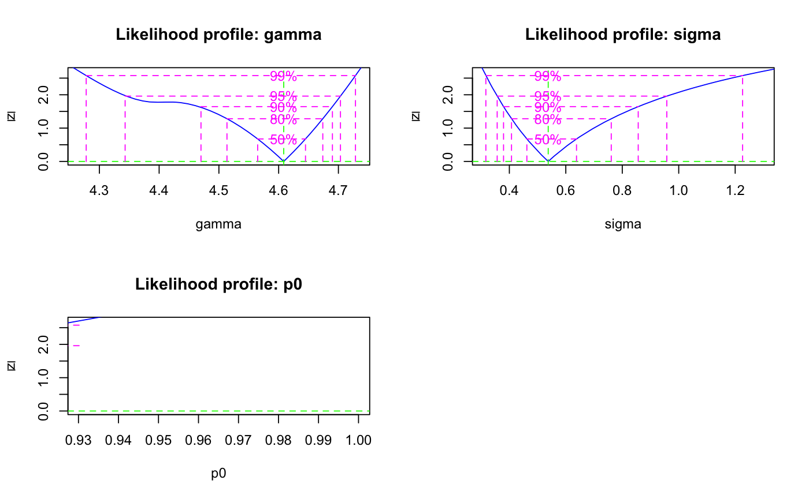

Function to fit the maximum age model to De data. This is a wrapper function that calls calc_MinDose() and applies a similiar approach as described in Olley et al. (2006).
calc_MaxDose(data, sigmab, log = TRUE, par = 3, bootstrap = FALSE, init.values, plot = TRUE, ...)
| data | RLum.Results or data.frame (required):
for data.frame: two columns with De |
|---|---|
| sigmab | numeric (required):
additional spread in De values.
This value represents the expected overdispersion in the data should the sample be
well-bleached (Cunningham & Walling 2012, p. 100).
NOTE: For the logged model ( |
| log | logical (with default): fit the (un-)logged three parameter minimum dose model to De data |
| par | numeric (with default):
apply the 3- or 4-parametric minimum age model ( |
| bootstrap | logical (with default): apply the recycled bootstrap approach of Cunningham & Wallinga (2012). |
| init.values | numeric (with default):
starting values for gamma, sigma, p0 and mu. Custom values need to be provided in a vector of
length three in the form of |
| plot | logical (with default):
plot output ( |
| ... | further arguments for bootstrapping ( |
Please see calc_MinDose.
Data transformation
To estimate the maximum dose population and its standard error, the three parameter minimum age model of Galbraith et al. (1999) is adapted. The measured De values are transformed as follows:
convert De values to natural logs
multiply the logged data to creat a mirror image of the De distribution
shift De values along x-axis by the smallest x-value found to obtain only positive values
combine in quadrature the measurement error associated with each De value with a relative error specified by sigmab
apply the MAM to these data
When all calculations are done the results are then converted as follows
subtract the x-offset
multiply the natural logs by -1
take the exponent to obtain the maximum dose estimate in Gy
Further documentation
Please see calc_MinDose.
0.3.1 (2018-01-21 17:22:38)
Burow, C. (2018). calc_MaxDose(): Apply the maximum age model to a given De distribution. Function version 0.3.1. In: Kreutzer, S., Burow, C., Dietze, M., Fuchs, M.C., Schmidt, C., Fischer, M., Friedrich, J. (2018). Luminescence: Comprehensive Luminescence Dating Data Analysis. R package version 0.8.0. https://CRAN.R-project.org/package=Luminescence
Arnold, L.J., Roberts, R.G., Galbraith, R.F. & DeLong, S.B., 2009. A revised burial dose estimation procedure for optical dating of young and modern-age sediments. Quaternary Geochronology 4, 306-325.
Galbraith, R.F. & Laslett, G.M., 1993. Statistical models for mixed fission track ages. Nuclear Tracks Radiation Measurements 4, 459-470.
Galbraith, R.F., Roberts, R.G., Laslett, G.M., Yoshida, H. & Olley, J.M., 1999. Optical dating of single grains of quartz from Jinmium rock shelter, northern Australia. Part I: experimental design and statistical models. Archaeometry 41, 339-364.
Galbraith, R.F., 2005. Statistics for Fission Track Analysis, Chapman & Hall/CRC, Boca Raton.
Galbraith, R.F. & Roberts, R.G., 2012. Statistical aspects of equivalent dose and error calculation and display in OSL dating: An overview and some recommendations. Quaternary Geochronology 11, 1-27.
Olley, J.M., Roberts, R.G., Yoshida, H., Bowler, J.M., 2006. Single-grain optical dating of grave-infill associated with human burials at Lake Mungo, Australia. Quaternary Science Reviews 25, 2469-2474 Further reading
Arnold, L.J. & Roberts, R.G., 2009. Stochastic modelling of multi-grain equivalent dose (De) distributions: Implications for OSL dating of sediment mixtures. Quaternary Geochronology 4, 204-230.
Bailey, R.M. & Arnold, L.J., 2006. Statistical modelling of single grain quartz De distributions and an assessment of procedures for estimating burial dose. Quaternary Science Reviews 25, 2475-2502.
Cunningham, A.C. & Wallinga, J., 2012. Realizing the potential of fluvial archives using robust OSL chronologies. Quaternary Geochronology 12, 98-106.
Rodnight, H., Duller, G.A.T., Wintle, A.G. & Tooth, S., 2006. Assessing the reproducibility and accuracy of optical dating of fluvial deposits. Quaternary Geochronology 1, 109-120.
Rodnight, H., 2008. How many equivalent dose values are needed to obtain a reproducible distribution?. Ancient TL 26, 3-10.
calc_CentralDose, calc_CommonDose, calc_FiniteMixture, calc_FuchsLang2001, calc_MinDose
## load example data data(ExampleData.DeValues, envir = environment()) # apply the maximum dose model calc_MaxDose(ExampleData.DeValues$CA1, sigmab = 0.2, par = 3)#> #> ----------- meta data ----------- #> n par sigmab logged Lmax BIC #> 62 3 0.2 TRUE -19.79245 58.86603 #> #> --- final parameter estimates --- #> gamma sigma p0 mu #> 4.34 0.54 0.65 0 #> #> ------ confidence intervals ----- #> 2.5 % 97.5 % #> gamma 4.24 4.60 #> sigma 0.36 0.96 #> p0 NA 0.87 #> #> ------ De (asymmetric error) ----- #> De lower upper #> 76.58 69.65 99.33 #> #> ------ De (symmetric error) ----- #> De error #> 76.58 7.57